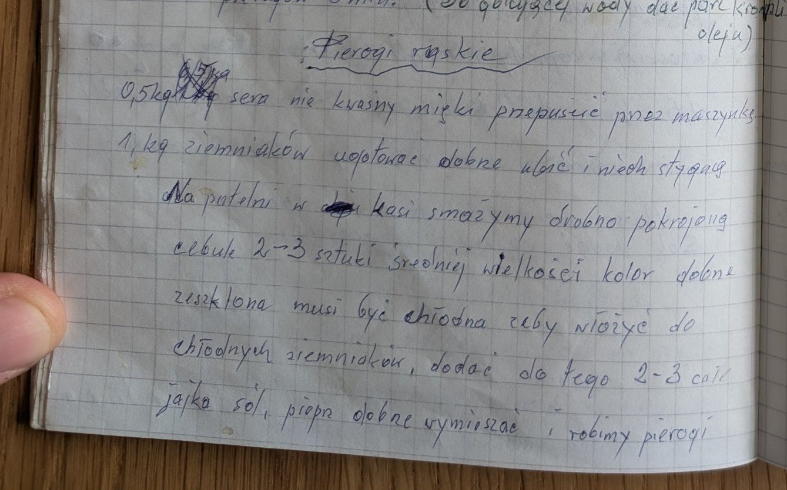

Pierogi ruskie


Składniki
- 0,5 kg sera (nie kwaśnego, miękkiego)
- 1 kg ziemniaków
- 2-3 średnie cebule
- margaryna Kasia
- 2-3 całe jajka
- sól, pieprz
- ciasto na pierogi
Przygotowanie
- Ser przepuścić przez maszynkę.
- Ziemniaki ugotować, dobrze ubić i ostudzić.
- Na margarynie zeszklić drobno pokrojoną cebulę i ostudzić.
- Do chłodnych ziemniaków dodać ser, cebulę, 2-3 jajka, sól i pieprz, dobrze wymieszać.
- Robić pierogi.
Oryginalny zapis
Pierogi ruskie 0,5 kg sera nie kwaśny miękki przepuścić przez maszynkę 1 kg ziemniaków ugotować dobrze ubić i niech stygną Na patelni w kasi smażymy drobno pokrojoną cebulę 2-3 sztuki średniej wielkości kolor dobrze zeszklona musi być chłodna żeby włożyć do chłodnych ziemniaków, dodać do tego 2-3 całe jajka sól, pieprz dobrze wymieszać i robimy pierogi